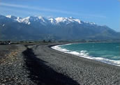

Kaikoura
Framed by the spectacular Kaikoura mountain range and the expansive Pacific Ocean, Kaikoura is a thriving seaside town. The area is a haven for a vast collection of Bird and Aquatic life making it one of New Zealand's most popular eco-tourism destinations.
Kaikoura's abundance in Aquatic and Bird life has been brought about because of its rare landform geology. A rare convergence of 2 strong ocean currents takes place just off shore. The ocean plummets to incredible depths only metres from the shore. It is these deep waters which harbour a rich source of food.
Undoubtedly one of the most famous attractions of Kaikoura are the Sperm Whales, which have taken up permanent residence there. These huge mammals grow up to 18 metres in length and are spectacular to watch up close. They enjoy feeding on giant squid over 500 metres below the surface. Along with the Sperm whales, Humpback and Pilot whales also visit from time to time. Other star attractions include Dusky Dolphins, rare Hectors Dolphins, Fur Seals and the Majestic Albatross.